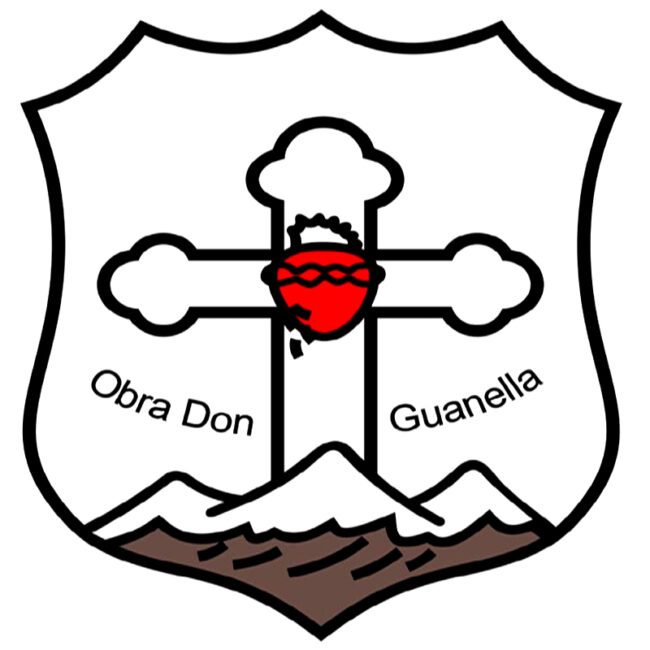

Nuestro producto
1Seguridad y Tranquilidad
Un collar GPS para mascotas ofrece una gran tranquilidad a los dueños, permitiéndoles rastrear y localizar a sus peluditos en tiempo real. Esto es especialmente útil en caso de que la mascota se pierda o se aleje de casa, asegurando que siempre puedan ser encontrados rápidamente y llevados de vuelta a salvo.
2Prevención de Pérdidas
Un collar GPS ayuda a prevenir que las mascotas se pierdan permanentemente. Con alertas configurables que notifican si la mascota sale de un área segura, los dueños pueden actuar rápidamente para recuperar a su mascota antes de que se aleje demasiado, evitando situaciones de extravío prolongado.
Nuestras propuestas
seguridad
no se que porongo poner aca xd
confort
collar regulable sin molestias ni sobrepeso.
Calidad
priorizar su bienestar, seguridad y comodidad
Acerca de
|  |
¿Quiénes somos?Somos alumnos del Instituto San José, cursando el último año en la modalidad de Técnico Electrónico. Para nuestro proyecto final, decidimos combinar nuestra pasión por la tecnología y el amor por nuestras mascotas. Así, creamos una innovadora solución tecnológica diseñada para mejorar el cuidado y bienestar de nuestros peluditos, aplicando todo lo aprendido durante nuestra formación. |
.jpg.jpg)
|
ProyectoPara crear este proyecto, utilizamos programación en C++ y Arduino. Hemos programado un GPS y un módulo GSM, que serán los componentes estrella de este desarrollo. Un GPS es un dispositivo que utiliza señales de satélites para determinar la ubicación geográfica exacta de un objeto en cualquier parte del mundo. |